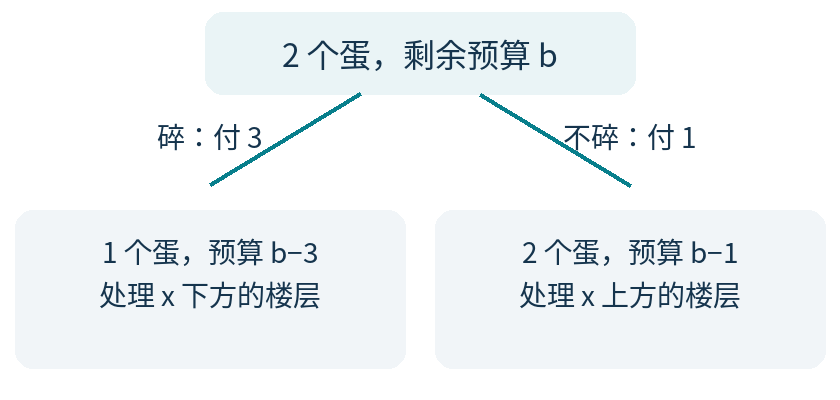
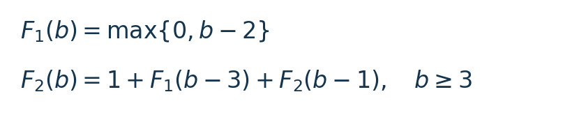
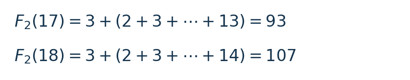
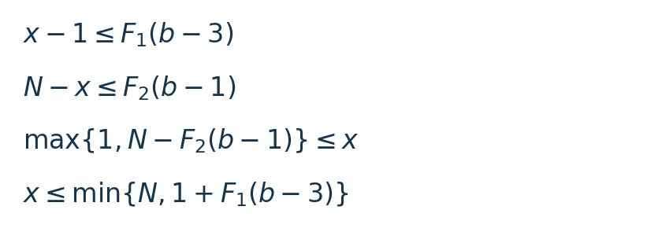

两枚鸡蛋，如何安排有损耗成本的测试？
每周面试挑战 002 · 逻辑与策略 · 中等偏难
2026 年 10 月 3 日｜建议思考 25–35 分钟；解答阅读约 8–12 分钟
本期是经典两蛋模型的原创成本变式，采用量化面试风格，不对应某家公司的已核实面试题。只需整数运算；解答会从头说明如何把“保证不超预算”变成可计算的条件。
主问题
有一栋 100 层的楼，楼层编号为 1 到 100。存在一个固定、未知的整数阈值 t，范围为 0 到 100：在第 x 层扔鸡蛋，当且仅当 x≤t 时不会碎。t=0 表示所有楼层都会摔碎；t=100 表示所有楼层都安全。
你有两个完全相同的鸡蛋。没碎的鸡蛋不受损，可以继续使用；碎掉的不能再用。每次只能选一个整数楼层测试，根据已经观察到的碎或不碎决定下一次楼层。结果没有随机误差，除这两个结果外没有额外信息。
- 一次没碎，成本为 1；一次碎掉，成本为 3。这是该次测试的总成本，最后一次也照收
- 移动、等待等其他成本均不计；不允许购买新蛋
- 下一步由已经观察到的结果决定，不通过抽签等方式随机选择；必须对每一个可能的 t 都准确确定阈值，题目没有给 t 指定概率分布
问题：最少要准备多少预算，才能保证总成本不超预算？请给出达到它的测试策略，并证明更少的预算一定不够。
追问：第一步有多少选择？
预算固定为主问题求出的最小值。在所有满足这项最坏成本保证的策略中，第一次测试可以选哪些楼层？请给出完整范围，并说明范围内每一层为什么都能接上合法的后续策略。
这一步关注“哪些开局仍有最优解”，不只找出一个好开局。可在完成主问题后再想几分钟。
下面开始给提示。若想独立思考，可以先停在这里。
三级提示
提示 1｜先把问题倒过来
与其直接问“100 层要多少钱”，先问“给定预算和鸡蛋数，最多能处理多少层”。尝试从只剩一个蛋的情况开始。
提示 2｜碎与不碎，留下的资源不同
在某层测试，碎了会少一个蛋并花掉 3；没碎保留两个蛋并花掉 1。两条分支都必须在各自剩余预算内完成，不能只照顾其中一条。
提示 3｜把楼层分成三段
测试层下方、测试层本身、测试层上方。若下方和上方分别能由相应分支处理，合起来就是当前预算能覆盖的楼层数。追问则把这两个容量当作开局位置的上下限制。
完整解答，想好再看
1 预算能覆盖多少层？
用 F₁(b)、F₂(b) 表示：手里有 1 个或 2 个蛋，剩余整数预算为 b 时，最多能保证处理多少个连续楼层。这里“处理 n 层”意味着区分 n+1 个阈值：从这些楼层全部不安全，到全部安全。F 的单位是“层”，b 的单位是“成本”。
已知某个较低楼层安全后，把它当成新的第 0 层即可；剩下的问题只取决于区间长度，不取决于楼层的绝对编号。没有未知楼层时，阈值已经确定，不需要再扔蛋。
先只剩一个蛋。必须从最低的未知楼层逐层向上试：若跳过一层后摔碎，就再也无法区分下方多个阈值。检查 n≥1 层的最坏成本出现在前 n−1 层没碎、最后一层碎掉，总计 n−1+3=n+2。因此预算 b 最多处理 b−2 层；预算不足 3 时一层也无法保证。
2 把两条分支拼起来
现在有两个蛋，准备在当前区间的第 x 层测试。这个动作把问题分成下面两种情况：


测试层下方最多安排 F₁(b−3) 层，上方最多安排 F₂(b−1) 层，再加测试层本身，得到：


公式中的 max 表示取较大值。第二行的等式同时给出了上界和达到上界的办法。任何策略都得选一个首次测试楼层；如果任一边超过对应容量，那条分支就无法保证完成。所以总层数不能超过右侧。反过来，把测试层放在下方容量之后，两边分别采用能达到各自容量的策略，就能处理右侧这么多层。
从小预算往上算时，右侧的预算都更小，所需策略已经由前面的步骤确定。这就把“看起来合理”补成了一个递推证明。预算为 0、1、2 时，两蛋容量也都是 0，因为一次可能摔碎的测试就要花 3。
3 定位最小预算
预算为 3、4、5 时，F₂ 依次为 1、2、3。比如预算 5 首次若碎，就只剩预算 2，无法再查下方，因此首次测试只能放在当前最低的未知层。
从预算 6 起，每多加 1 预算，容量增加 1+F₁(b−3)=b−4 层。所以增加量依次是 2、3、4……；累加得到：


17 的预算最多处理 93 层，小于 100；18 可以处理 107 层，足以覆盖 100。成本总是整数，因此最小保证预算就是 18。
4 一套实际达到 18 的策略
只要第一个蛋一直没碎，就依次去下面这些楼层：
14 → 27 → 39 → 50 → 60 → 69
77 → 84 → 90 → 95 → 99 → 100
一旦它在 x 层碎掉，记前一次已经确认安全的楼层为 L；若第一次就碎，L=0。此时阈值只可能在 L 到 x−1。用剩下的蛋从 L+1 开始逐层测试，最多测到 x−1；若第二个蛋在 y 层碎，就确定 t=y−1 并停止；若这些楼层全安全，也已经确定 t=x−1。不要再测已知会碎的 x 层。
为什么这样排？开局 18 的预算，碎掉后剩 15；一个蛋能处理 13 层，于是先测第 14 层。若没碎，剩 17，下一次下方可留 12 层，所以向上跳 13 层到 27。继续这样安排，直到顶楼；最后一个区间不足容量，直接截在 100 即可。
沿途每一步都按已经证明的两边容量安排，所以所有阈值都能在预算内完成。例如 t=12 时：14 层先碎，花 3；再测 1 到 12，花 12；13 层碎，花 3，总成本正好 18。若 t=100，一路没碎，只花 12。这也说明我们保证的是最高可能成本，不是要求每次都花完预算。
5 追问：最优开局不止一个
用 N 表示当前未知楼层数，预算为 b。若首次测试楼层选 x，下方有 x−1 层，上方有 N−x 层。要让两种结果都可收尾，必须同时满足：


这里 min 表示取较小值。前两行分别限制下方和上方的规模；后两行只是把它们移项，再加上楼层必须在 1 到 N 的范围内。
代入 N=100、b=18：碎掉后，单蛋预算 15 能处理 13 层，因此 x≤14；没碎后，双蛋预算 17 能处理 93 层，因此 x≥7。
因此，第一次可以选 7、8、9、10、11、12、13、14 中的任一层。
必要性已经由两条分支限制给出。充分性也要补上：范围内任一 x 都让下方不超过 13 层、上方不超过 93 层，分别套用对应预算的策略即可；区间比容量小，就在区间终点截短测试。于是它们都能保证成本至多 18，而主问题的下界又排除了低于 18 的保证。
例如从第 7 层开始，没碎后恰好留下 93 层供预算 17 处理；从第 14 层开始，碎掉后恰好留下 13 层供单蛋预算 15 处理。两个端点各自用满不同分支，中间开局则两边都有余量。
方法与两处易错点
可以带走的步骤是：把“最少资源”倒过来写成“固定资源能覆盖多少”，先证明每条分支的容量上限，再把能达到上限的策略拼回去。追问进一步把一个构造扩展成全部可行开局。
- 只保证测试次数少，不等于保证本题成本低；摔碎这一条分支要按总成本 3 计
- 一旦阈值已由信息确定就停止。最后一个蛋全程没碎，也可能已经确定答案，无需再制造一次破损
边界很短：以上结论依赖固定阈值、可靠结果、鸡蛋不累积损伤，以及题面明确的成本规则。若改问平均成本，需要先给出阈值分布，最优策略也可能改变。
题型来源与选读
本期的成本设定、题干与推导为原创改编；下面两份一手材料提供经典阈值模型和决策目标的背景，不把本期数值答案归于它们。
Steven Skiena：Stony Brook 算法课程 Lecture 17，末尾两页的 Egg Dropping 问题
明确“总会碎”和“从不碎”的阈值端点，以及多蛋递推问题。
Moshe Sniedovich：The Joy of Egg-Dropping in Braunschweig and Hong Kong（2003）
论文摘要介绍两蛋最优策略，并区分最坏情况与期望目标；页面可查看摘要。